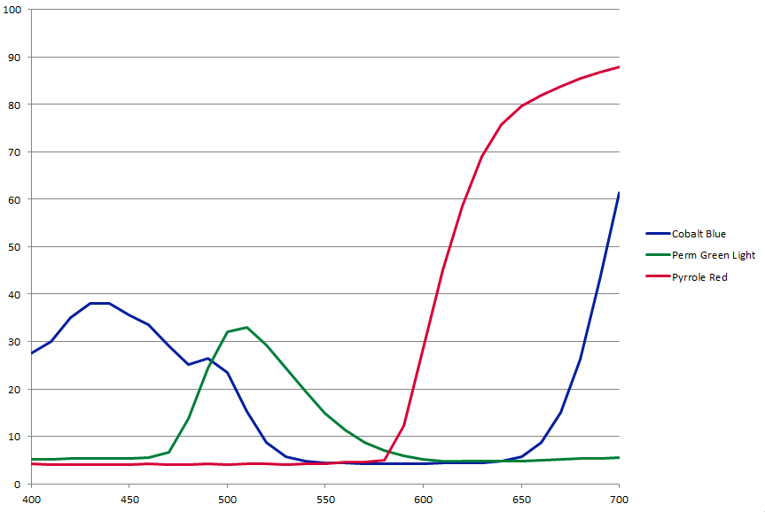

| Golden Paint Spectra |
|
by Andrew Glassner and Eric Haines Golden Artist Colors, Inc., has kindly given us spectral data for their acrylic paints, and they have allowed us to share these with others. Thank you, Golden! Golden is interested in hearing what work gets done with the data, so we'd appreciate it if you let us know - we'll pass it on. The data is in a spreadsheet, with one row for each of 78 Golden acrylic paints. Each row contains three types of data: CIE L*a*b* coordinates, point samples of reflected light from 400 to 700nm, and K/S values for Kubelka-Munk mixing. These are all discussed below. The spreadsheet is named "HB 10 mil Drawdowns over White." Let's unpack this one phrase at a time.
Once each sample was prepared, it was illuminated with a standard D65 light source and and measured with a spectrometer for a 10 degree observer. The samples were taken at 10 nm intervals from 400 to 700 nm. Golden states, "We have not factored in the reflectivity spectrum of the card and by the time one has a drawdown of paint on top, the main influence will be similar to an underlying titanium white surface." For convenience, the spreadsheet also includes two forms of data derived from each spectrum: the overall L*a*b* color space values, and the K/S values used by the Kubelka-Munk theory. Note that Golden does not consider these measurements to represent the color of opaque paint. Quoting Golden again, "We do not have any guidance on how the curves would change if the paint was truly cast as opaque, the definition there being that a reading over the black and white areas of a drawdown card being equal." They continue that "[when measuring a dry 6 mil sample] the white of the card definitely influences the reading of more transparent colors. For many calculations, however, one would want to have readings based on truly opaque films. Unfortunately those are things we currently do not have available." This means that the spreadsheet data inherently includes the D65 illuminant spectrum and the white backing card's reflective spectrum. Most calculations will want the paint's own spectrum, which means you'll need to factor out the illuminant and the backing card. Computing a perceived color consists (at its simplest) of multiply a material's spectrum by a light's spectrum and then applying the three typical response curves of human cone cells, integrating the responses to get a CIE-XYZ color. We've noted some of the complicating factors here, such as the reflectivity of the drawdown card and the D65 light's spectrum, but the basic process is relatively straightforward. Predicting the perceived color of mixed paints is not trivial. A popular model for paint mixing is the Kubelka-Munk theory. You can read about this in the (now free!) book, Principles of Digital Image Synthesis. The Kubelka-Munk theory seems to work well for acrylic paints, as reported in this paper. Golden also suggests looking at this thesis, since (quoting Golden), "it involved calculations based on our paints, albeit working off of our Matte Fluids."  |

|